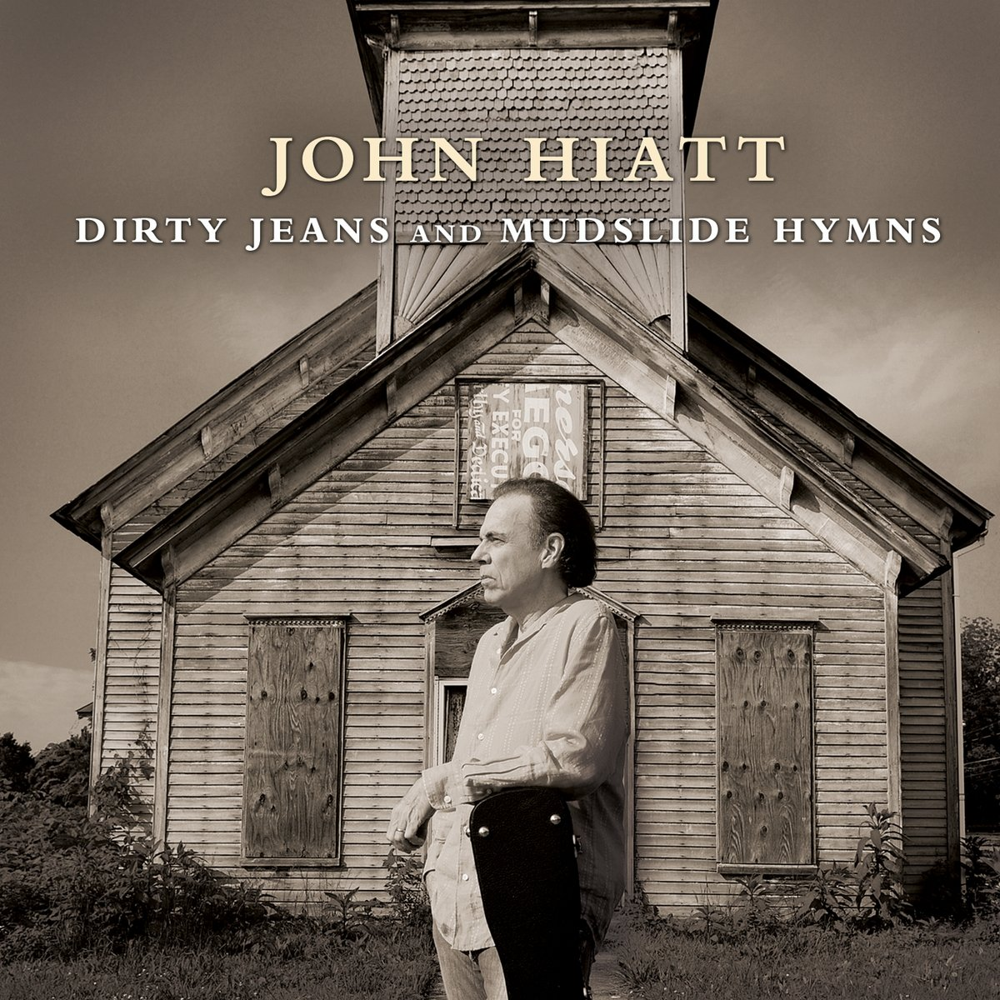

Lexicon of Song:
“Train to Birmingham”
A song written by John Hiatt in 2011
03 Feb 2023 · 5 min read
Southerner Thomas Wolfe, in his book You Can’t Go Home Again, had his main character speak these words:
You can’t go back home to your family, back home to your childhood … back home to a young man’s dreams of glory and of fame … back home to places in the country, back home to the old forms and systems of things which once seemed everlasting, but which are changing all the time – back home to the escapes of Time and Memory.
John Hiatt seemed to have had much the same sentiments in mind when he penned his song “Train to Birmingham.”
Several others have recorded this composition, but Hiatt’s own version seems to me to be the definitive rendition.
As the eighth track from the album Dirty Jeans and Mudslide Hymns starts up, note how the rhythm of the drums gives you a seat on the train before Hiatt even opens his mouth.
I’ve been riding on this train,
Drinking whiskey for the pain;
Just another good ol’ boy going home.
See how Hiatt puts us at ease with the first three lines, giving us the impression that there’s little interesting and nothing novel going on here: “just another good ol’ boy going home.”
And every town I see,
Seems to take a part of me:
That’s the price that you pay when you roam.
These next three lines are a bit more revealing, though, and a bit more insightful, acknowledging the trade-off Hiatt has made by choosing to stray far from his origins, allowing the original integrity of his identity to be diluted by his travels.
And I lie when I have to;
And I cry when I can.
But I die a little slower,
On the train to Birmingham.
The chorus emphasizes the compromises and concessions Hiatt has made, lying when necessary, not always even having time to acknowledge his losses, knowing the final destination he is bound for, yet still taking what solace he can from riding a train that’s headed for his home.
I got holes in both my shoes,
And a guitar full of blues,
And a one way ticket for a remedy.
It’s the same ol’ lonesome song
I’ve been singing all night long:
Hey, porter, are we out of Tennessee?
This next verse works in a couple of different ways.
At first it just sounds like a description of the singer’s personal set of woes, but with a deeper listen we can recognize that Hiatt is using a series of stock images to carefully position himself in the center of a long American tradition of folk, country and blues artists. In a way, he seems to be saying that the particular origins and traditions of the singers don’t matter a great deal, because they’re all singing “the same old lonesome song.”
The final tip-off signaling his intentions comes with the last line, making reference to the classic Johnny Cash song titled “Hey, Porter.” (In addition, his reversal of Cash’s original question – anticipating his departure from Tennessee, rather than his arrival to it – may be making an oblique comment on a desire to escape the modern, commercial lure of Nashville country music.)
Note also that these lines, like the opening three, also serve to lull the listener into a state of lowered expectations, letting us think, for the moment, that there’s nothing going on here we haven’t heard a hundred times before.
But after another repetition of the chorus, Hiatt hits us with something original and unexpected, delivered in a confessional tone.
Well every year I ride this train,
To Alabama in the rain,
When I get that lonesome feelin’ in my bones.
So now for the first time we learn that Hiatt is not just singing about one train ride, perhaps motivated by some recent turn of his fortunes, but about a recurring trip driven by some deeper unease.
And then, finally, we get the profound and surprising conclusion to the song.
I never get to Birmingham,
Aw, but gettin’ there’s not the plan:
No, I just like the feel of going home.
And so now Hiatt finally acknowledges that neither this train, nor any other vehicle, can ever return him to his home; what’s more, he acknowledges that he’s known this truth for some time, before he ever boarded the train.
So why is he riding it once again?
And this is where Hiatt demonstrates the power of song most clearly.
We are all thinking beings.
But we are also feeling beings.
So while we can understand intellectually that we can never go home again (as novelist Thomas Wolfe makes clear)…
This knowledge does nothing to reduce the strength of our longing.
So sometimes, no matter how much we know, there’s no way to resolve this tension.
And so, even after demonstrating the depth of his self knowledge, Hiatt brings us full circle, back to where we started, suggesting that we’re still left singing those same old lonesome songs, riding those same old trains, seeking solace where we can.
Americana has become a recognized musical term in the past few decades, but it’s often hard to know exactly how it should be defined.
I suggest that this song by Hiatt not only exemplifies the term, but actually helps us to define it.
This is music that self-consciously draws from folk, blues and country roots, using small groups of musicians, playing acoustic and electrified instruments, as well as drums.
This is music that honors the talent and individuality of particular songwriters, singers and musicians.
At the same time, it is music that recognizes and expresses some or all of these common and so far timeless aspects of the American experience:
- a connection to the land, without having ownership of it;
- a rootedness in one’s particular geographic origins;
- a feeling of belonging to a particular community…
- but also a desire to travel and explore the vast American landscape, to break free and make fresh connections, to test one’s limits;
- a choice to speak for a particular community, even while the singer chooses to separate themselves from that community, through their choice of vocation;
- a desire to experience the benefits of travel and progress…
- even while understanding that the tide of American history on which they ride is simultaneously changing their original home to something they might no longer even recognize as such, were they to try to return.
I’ll end this tribute and appreciation with a personal confession.
I was recently listening to a shuffle of my music collection when this little number came along – one of Hiatt’s to which I had not previously paid much attention, frankly – and the music, lyrics, instruments and vocals so resonated with and amplified my own personal feelings at the time that it reduced me to sudden tears.
So naturally I had to go back and give it a bit more of my attention.
And discovered a thing of profound beauty that I had not previously recognized as such.
May I always have such days.